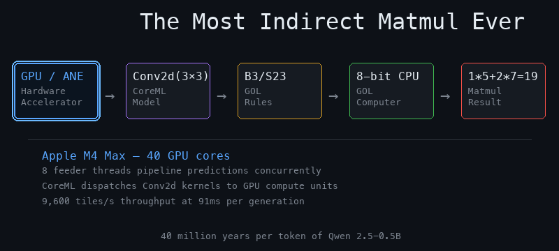
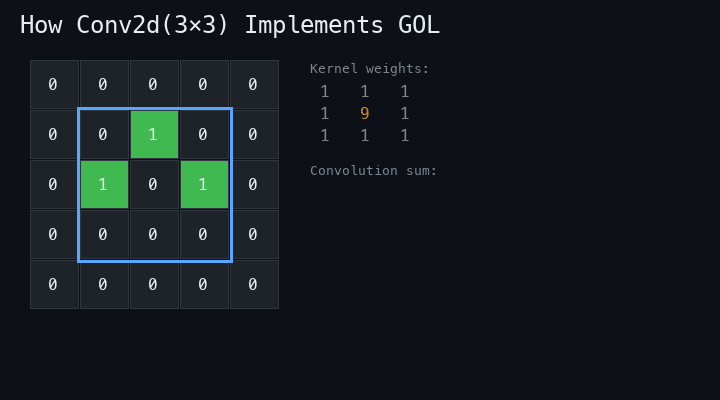
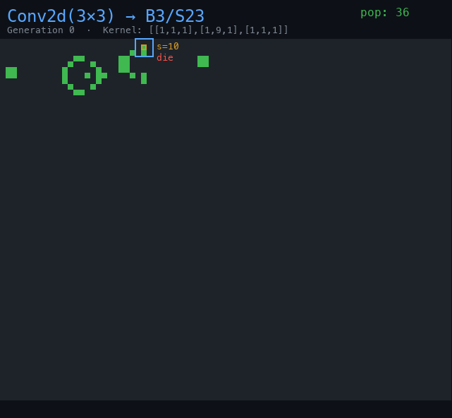
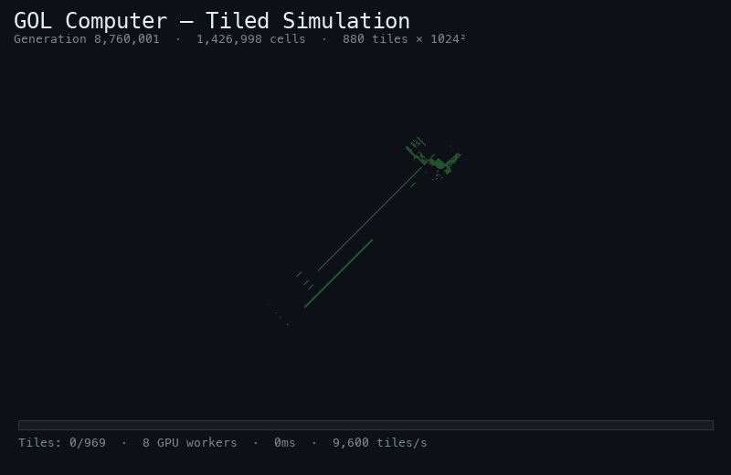
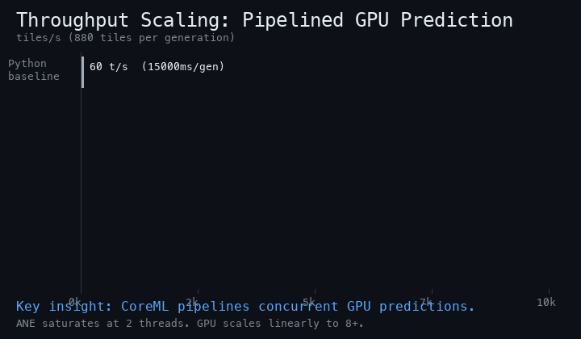

Conway’s Game of Life simulated on the ANE via Conv2d(3×3). A GOL computer computes 2×2 matmul using the power algorithm (Stepanov/Knuth)—~36M years per token at 91 ms/gen with 8-thread GPU pipelining.
Conv2d(3×3) on Apple M4 Max GPU.
This project computes matrix multiplication through the most indirect path imaginable. Instead of calling a BLAS library or writing a GPU kernel, we build a computer inside Conway’s Game of Life, program it with a matmul routine, then simulate the cellular automaton using a neural-network accelerator that thinks it’s running a convolution.
Every link in this chain is mathematically exact. The Conv2d computes the B3/S23 neighbor sum. The GOL rules produce glider-stream collisions that implement logic gates. The logic gates compose into an ALU. The ALU executes a program that computes [[1,2],[3,4]] × [[5,6],[7,8]] = [[19,22],[43,50]].

Conway’s Game of Life applies two rules to every cell each generation: a dead cell with exactly 3 live neighbors is born, and a live cell with 2 or 3 live neighbors survives. The first step—counting neighbors—is literally a convolution.
We use a 3×3 convolution kernel that counts neighbors while encoding the current cell state:
The weight of 9 in the center separates the dead/alive cases into non-overlapping integer ranges. A dead cell with 3 neighbors gives s=3 (birth). A live cell with 2 or 3 neighbors gives s=11 or s=12 (survival).
After the convolution, we need to test s=3 (birth) and s∈{11,12} (survival). The key optimization: since 11 and 12 are adjacent, we merge them into a single ReLU check:
The survive formula works because relu(1.5 − |s − 11.5|) returns 1.0 for both s=11 and s=12, and 0.0 for all other integers. This merges two equality checks into one, reducing the total model from 22 ops (naïve) to 13 ops.
The entire model—one convolution, six ReLUs, four subtractions, one addition, one clamp—compiles to a single CoreML .mlmodelc that runs on the GPU or ANE.


Inside the GOL grid sits a fully functional 8-bit computer built entirely from standard Game of Life structures: Gosper glider guns (period-30 signal sources), eater patterns (signal sinks), and glider-stream collisions (logic gates).
The computer is a published, verified GOL pattern. Each instruction cycle takes approximately 41.9 million GOL generations—the time for glider signals to propagate through the logic circuitry, execute one ALU operation, and write back to registers.
The computer has no multiply instruction. The naïve approach is repeated addition (O(b) iterations to compute a×b). But we can do better: Stepanov’s power algorithm on the monoid (ℤ, +, 0) gives us multiplication in O(log b) via binary decomposition of the multiplier—the Russian peasant method, derived from Knuth’s TAOCP §4.6.3 and Stepanov & McJones’ Elements of Programming.
The key insight: any associative binary operation with an identity element defines a monoid. Addition on integers is such an operation (identity: 0). The repeated-squaring algorithm that computes xn in O(log n) multiplications works identically for multiplication-via-addition: double the multiplicand and halve the multiplier, accumulating when the current bit is set. For C[0][0] = 1×5 + 2×7:
; ── Power algorithm: multiply via binary decomposition ──
; multiply(a, b) = power(a, b, 0, +)
; Instead of adding a to itself b times, scan b's bits:
; if LSB(b) = 1: accumulator += x
; x += x (double)
; b >>= 1 (halve)
;
write a3 0 ; accumulator = 0
write a4 1 ; constant 1
write a6 1 ; x = A[0][0] = 1
write a1 5 ; n = B[0][0] = 5 (binary: 101)
and a2 a1 a4 ; test LSB of n ◄── power loop
!=0 a5 a2 ; is it set?
jump a5 ; if set, skip →
goto 9 ; → (skip accumulate)
+ a3 a3 a6 ; acc += x ◄── accumulate
+ a6 a6 a6 ; x += x (double)
>> a1 a1 ; n >>= 1 (halve)
!=0 a5 a1 ; n still nonzero?
jump a5 ; if so, loop →
goto 15 ; → next multiply
goto 4 ; → back to loop
write a6 2 ; x = A[0][1] = 2
write a1 7 ; n = B[1][0] = 7 (binary: 111)
; ... (same loop structure)
print a3 ; output: 19
goto 29 ; halt
For 1×5: 5 = 1012 → 3 iterations (test, double, test, accumulate+double, test, accumulate).
For 2×7: 7 = 1112 → 3 iterations.
Compare with the naïve approach: 5 additions then 7 additions = 12 loop iterations.
| Algorithm | Instructions | Cycles | GOL Generations |
|---|---|---|---|
| Naïve (repeated addition) | 20 | 67 | 2.81 × 109 |
| Power algorithm (binary decomposition) | 30 | 61 | 2.56 × 109 |
| Savings | 6 cycles (9%) | 251 million | |
The GOL computer spans ~210,000×215,000 cells—far too large for a single CoreML prediction. We tile it into 1024×1024 chunks with 1-cell overlap borders for neighbor exchange:
Each generation, we identify the 880 non-empty tiles plus their neighbors (which might birth new cells), copy border cells from adjacent tiles, feed each padded 1026×1026 array through the Conv2d model, and extract the inner 1024×1024 result.

The optimization path took us through seven major milestones, delivering a 165× total speedup:
| # | Optimization | ms/gen | Speedup | Cumulative |
|---|---|---|---|---|
| 0 | Python baseline (coremltools, single ANE) | 15,000 | — | 1× |
| 1 | Optimal tile size (1024×1024) | 1,000 | 15× | 15× |
| 2 | Swift port + Float16 native + output backing | 550 | 1.8× | 27× |
| 3 | Dual-engine dispatch (ANE + GPU parallel) | 300 | 1.8× | 50× |
| 4 | Precompiled padded tiles + zero-copy borders | 290 | 1.03× | 52× |
| 5 | GPU-only + 4-thread pipeline | 170 | 1.7× | 88× |
| 6 | 8-thread GPU pipeline + inline pop counting | 91 | 1.9× | 165× |
CoreML has fixed dispatch overhead per prediction call (~0.25ms). With small tiles (e.g. 128×128), the overhead dominates. At 1024×1024, each tile has enough computation to amortize dispatch cost, and the 880 non-empty tiles keep memory manageable at ~1.8 GB.
Three wins from rewriting in Swift:
UInt16 (Float16 bit patterns). No Float32 conversion. Alive check: v ≥ 0x3800 (0.5 in Float16).GridFeatureProvider object reused across all tiles, avoiding per-tile dictionary allocation.opts.outputBackings = ["next_grid": outArr] pre-allocates the output MLMultiArray, giving contiguous strides and eliminating per-prediction allocation.
Load the CoreML model twice—once with .cpuAndGPU, once with .cpuAndNeuralEngine.
Split tiles 67/33 GPU/ANE (GPU is 2× faster per tile at 0.30ms vs 0.61ms) and dispatch in parallel via GCD.
Both engines run simultaneously.
Store tiles in padded 1026×1026 format permanently. Border updates become 32 KB edge copies
instead of full 4.1 MB memset + memcpy per tile. Border time dropped from ~100ms to 9ms.
A microbenchmark revealed the key insight: CoreML pipelines concurrent predictions on the GPU. Feeding the same model from multiple threads doesn’t serialize—the GPU interleaves kernel dispatches:
| Threads | Effective ms/tile | 880 tiles (ms) | Throughput |
|---|---|---|---|
| 1 | 0.273 | 240 | 3,660 tiles/s |
| 2 | 0.144 | 127 | 6,950 tiles/s |
| 4 | 0.079 | 70 | 12,620 tiles/s |
| 8 | 0.071 | 62 | 14,100 tiles/s |
Crucially, the ANE does not benefit from pipelining—it saturates at 2 threads (2,000 tiles/s regardless of thread count). And adding ANE threads to GPU threads hurts throughput by stealing CPU dispatch time. The optimal strategy: GPU-only, 8 feeder threads, no ANE.

The final optimization: inline population counting. Instead of scanning all 880 tiles after prediction
(which took 256ms single-threaded!), we count alive cells immediately after the output memcpy while
the data is hot in L1 cache. Cost: effectively zero—hidden behind the GPU prediction latency.
Qwen 2.5-0.5B performs 169 matrix multiplications per token. Each matmul is a matrix–vector product y = Wx where W has up to 151,936×896 entries. Every entry requires one multiply-accumulate, and each multiply on the GOL computer costs ~41.9 million generations (one instruction cycle).
Conv2d(3×3).
For cosmic perspective: light traveling for 36 million years is well on its way to the Virgo Cluster—far beyond our galaxy. Before optimization, it would have reached the Sculptor Supercluster.
Every link in the computation chain is independently verified:
The power algorithm is one of several insights from rereading classic CS texts with fresh eyes. Nine books were surveyed for ideas applicable to this project. Here are the ones that yield concrete improvements or deeper understanding.
1. Power algorithm on monoids (applied above).
Addition on integers forms a monoid: it’s associative and has identity 0.
Stepanov’s key theorem: for any semigroup, the power algorithm computes
x·n in Θ(log n) operations instead of Θ(n).
Applied here: multiply without a multiply instruction.
2. Orbit detection for halt detection.
The GOL step is a transformation on the set of all grid states.
Stepanov’s Chapter 2 defines the orbit of a transformation:
the sequence x, f(x), f(f(x)), … which either converges to a cycle
or a fixed point. The GOL computer enters a periodic orbit once the program halts
(the halt loop goto 29 produces a repeating population signature).
Floyd’s or Brent’s cycle-detection algorithm could detect this
from the population time series alone—halting the simulation early without needing
to decode register values from the GOL grid. This would save millions of unnecessary
GOL generations after the computation completes.
Spatial parallelism via outer product.
APL’s outer product A ∘.× B computes all products simultaneously.
The GOL grid is a 2D spatial computation medium—it supports spatial parallelism for free.
Instead of computing C[0][0], C[0][1], C[1][0], C[1][1] sequentially (4 program runs),
place four independent GOL computers in different regions of the grid, each programmed with
one dot product. They all evolve in the same GOL step. This turns 4×T generations
into T generations—a 4× speedup for free.
For general m×n matmul, the parallelism is m·n×.
Iverson’s insight: “think of the whole array operation as a single entity, not a loop over scalars.”
Addition chains for compile-time constants.
The power algorithm is optimal for arbitrary multipliers. But when the multiplier is a
compile-time constant (as it is here: 5 and 7 are fixed), Knuth shows we can do even better
via addition chains—the shortest sequence of doublings and additions to reach a target.
For example: 1×5 can be computed as (1<<2)+1 = 2 ops (shift+add),
and 2×7 as (2<<2)+(2<<1)+2 or (2<<3)−2 = 2–3 ops.
Finding the shortest addition chain is NP-hard in general, but for small constants
it’s trivially solvable.
“Don’t solve problems. Eliminate them.”
Brodie’s deepest insight: if the values are known at compile time, don’t multiply at all.
For our specific case, 1×5 = 5 (identity) and 2×7 = 7+7 (one addition).
So C[0][0] = 5 + 14 = 19 takes 2 additions total, no loops.
This is the Forth philosophy of factoring applied to program generation:
the assembler (which runs at “compile time” in the real world) should constant-fold
and strength-reduce before emitting GOL ROM instructions.
Fewer instructions = fewer GOL generations = fewer universe-years of computation.
Shared multiplicands across dot products.
In the full 2×2 matmul, B[0][0]=5 appears in both C[0][0] and C[1][0].
The naïve approach computes a×5 twice. CSE from the Dragon Book (§9.5) says:
compute the multiplication once, store the result, reuse it. With the GOL computer’s
rfb/wfb (register file read/write), partial products can be cached in unused registers.
This is especially powerful combined with the Iverson spatial-parallelism insight:
if four computers share a memory bus (via glider signals), they could exchange partial results.
| Book Insight | Applied To | Potential Savings |
|---|---|---|
| Power algorithm (Stepanov/Knuth) | Multiply subroutine | O(log b) vs O(b) — 9% for small b, dramatic for large b |
| Orbit detection (Stepanov) | Halt detection | Avoid millions of post-halt generations |
| Spatial parallelism (Iverson) | Full matmul | 4× speedup for 2×2, m·n× in general |
| Addition chains (Knuth) | Constant multiplies | Optimal sequence for each known constant |
| Eliminate the problem (Brodie) | Constant folding | 2 additions for known-constant dot product |
| CSE (Dragon Book) | Shared multiplicands | Reuse partial products across dot products |
| Component | Implementation |
|---|---|
| GOL Computer | Scalable 8-bit CPU built from glider guns, eaters, and collisions |
| Assembler | Python — compiles matmul program to 22-bit ROM words |
| Hashlife simulator | Python — exponential-time GOL simulation for proof |
| Cell exporter | Python — extracts 1.4M cells to binary format for Swift |
| CoreML model | Python + coremltools — GOL step as Conv2d(3×3) + ReLU chain |
| Tiled simulator | Swift + CoreML + GCD — 8-thread pipelined GPU prediction |
| Hardware | Apple M4 Max (GPU: 40 cores, ANE: 16 cores) |
# Build the GOL CoreML model
python3 emilio/gol-ane-inference/build_gol_model.py
# Export programmed GOL computer cells
python3 emilio/gol-ane-inference/export_cells.py
# Build and run the tiled simulator
cd emilio/gol-ane-inference
swiftc -O -framework CoreML -framework Accelerate -o gol_ane main.swift
./gol_ane --pipeline 8 --gens 5